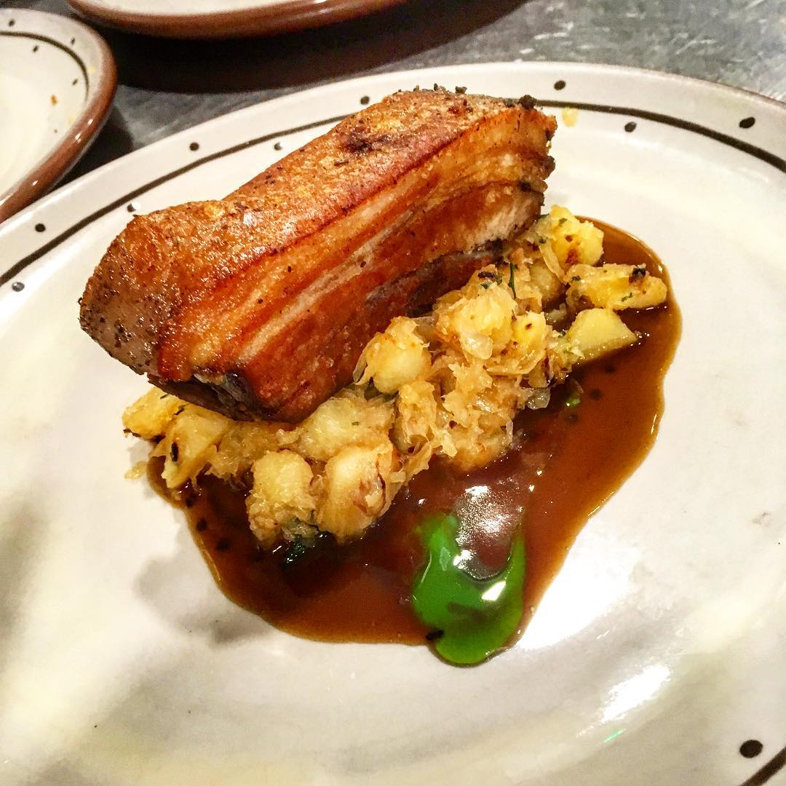

Striasky podľa @kolibajasna — Normy Jedál
uz uz som sa vydaval na vegansku put.... ked tu zrazu @lukasklenko mi zhatil plany.... tak zase nic🤷♂️
#porkbelly #bocik #pečenýbôčik #striasky #dnesjem #gastropodchopkom
#liptovskymikulas #liptov #dobrejedlo #wintermenu #localfood
#trstenskakeramika
@kolibajasna